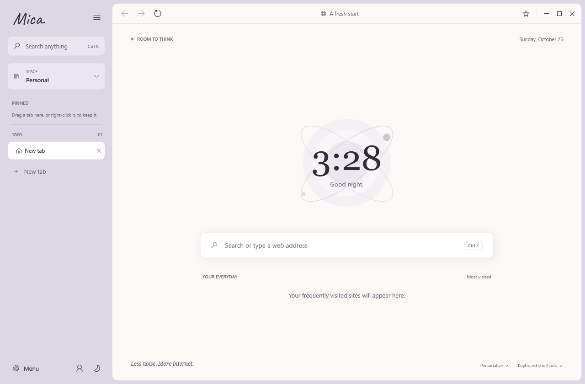
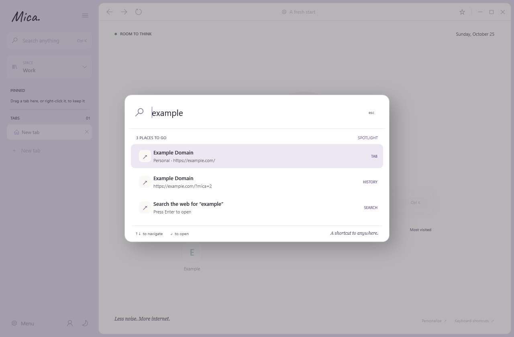
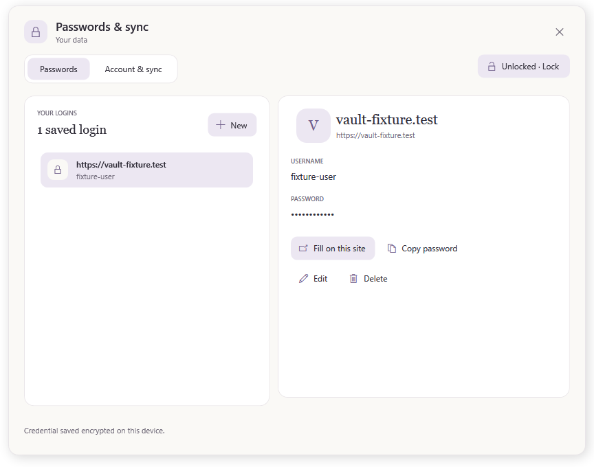
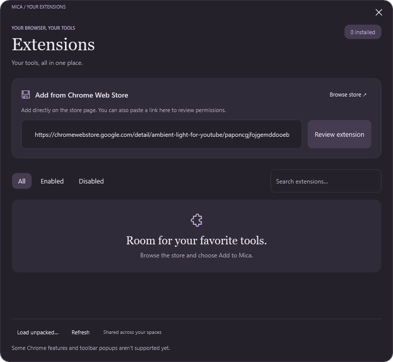
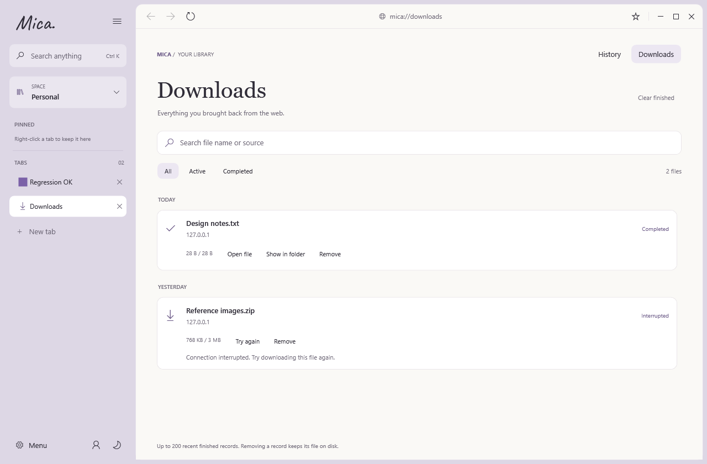
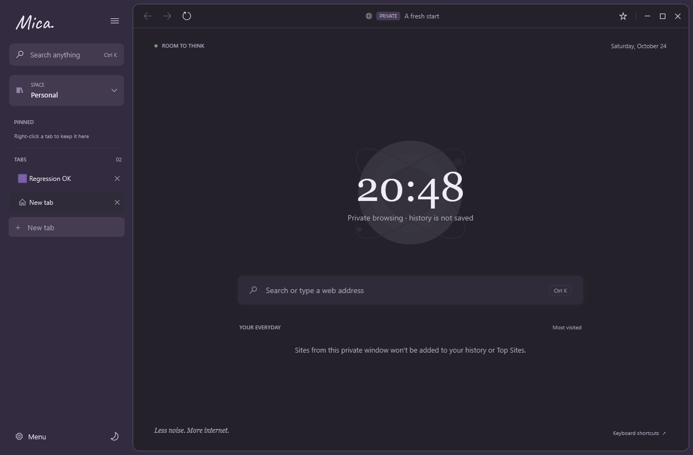

Spotlight
Ctrl+K searches open tabs in every Space, bookmarks and history, or jumps straight to the web.
Room to think
Mica is a calm browser for Windows. Spaces keep work and life apart, and Spotlight finds any tab in a keystroke.

Ctrl+K searches open tabs in every Space, bookmarks and history, or jumps straight to the web.
Separate Personal and Work, pin what matters, and fold tabs into colored groups.
An encrypted vault with Windows Hello unlock and optional sync across your devices.
Click Add to Mica on the Chrome Web Store and Mica verifies and installs it for you.
Find in page, a themed print dialog, DevTools and a task manager that can rest idle tabs.
New releases download in the background, are checked against GitHub's SHA-256 digest, and install on restart.







Windows 10 or 11, x64. The installer bundles the WebView2 engine and installs for the current user — no admin rights needed. It isn't code-signed yet, so Windows may show Unknown publisher.